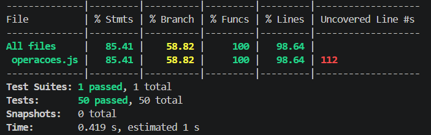
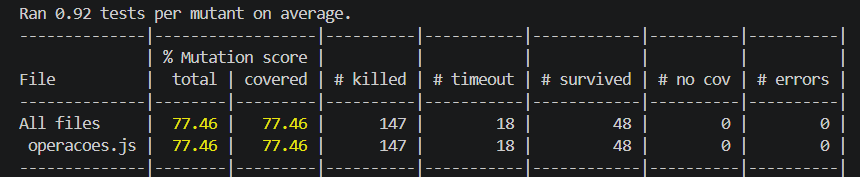
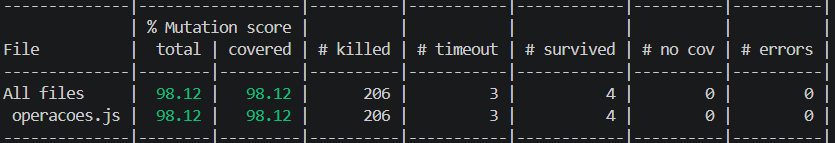

O projeto tem 50 funções de matemática em src/operacoes.js e uma suíte de testes de propósito fraca em test/operacoes.test.js. A ideia é exatamente essa: mostrar que dá pra ter cobertura alta e mesmo assim os testes serem ruins.
| Métrica | % Statements | % Branches | % Functions | % Lines | Testes |
|---|---|---|---|---|---|
| Inicial (50 testes) | 85,41% | 58,82% | 100% | 98,64% | 50 |

npm test -- --coverage antes de mexer nos testes.| Execução | Mutantes | Killed | Survived | Timeout | Mutation Score |
|---|---|---|---|---|---|
| Inicial | 213 | 147 | 48 | 18 | 77,46% |

npx stryker run antes de mexer nos testes.A cobertura de linhas tá em 98,64% e a de funções em 100%, então olhando só pra cobertura a suíte parece ótima. Mas o Stryker mostrou 77,46% de mutation score, ou seja, mais ou menos 1 a cada 4 mutantes passou batido pelos testes.
A explicação é simples: os testes originais só checavam o caso feliz de cada função. soma(2,3), isPar(100), isMaiorQue(10,5)... isso até roda a linha, mas não testa fronteira, não testa o caso que retorna false, não testa array vazio e não verifica a mensagem do erro. A cobertura de branches já tava em 58,82%, que era um sinal de que muito ramo do if nem chegava a ser executado.
Escolhi três mutantes que mostram bem os três tipos de fraqueza que apareceram na suíte: falta de teste na fronteira, falta de teste no caso que retorna false, e teste que depende de uma pré-condição que nunca é checada.
clamp trocando < por <=Arquivo: src/operacoes.js · linha 88 · Mutator: EqualityOperator
// Original if (valor < min) return min; // Mutante (sobreviveu) if (valor <= min) return min;
O teste original (“36. deve manter um valor dentro de um intervalo (clamp)”) chamava só clamp(5, 0, 10). Como o 5 tá no meio do intervalo, tanto o código original quanto o mutado retornam 5. O mutante só mudaria o resultado se eu testasse exatamente valor === min, e isso não tinha. A mesma coisa aconteceu na linha de baixo, com > virando >=.
isMaiorQue trocando > por >=Arquivo: src/operacoes.js (função isMaiorQue) · Mutator: EqualityOperator
// Original return a > b; // Mutante (sobreviveu) return a >= b;
O teste original era só isMaiorQue(10, 5) === true. Faz sentido que tenha sobrevivido: 10 > 5 é true e 10 >= 5 também é true, então o teste passa nos dois casos. O único valor de a e b que distingue os dois operadores é quando eles são iguais, e esse caso não tava na suíte. O mesmo problema apareceu em isMenorQue e isEqual.
medianaArray sem o comparador do sortArquivo: src/operacoes.js (função medianaArray) · Mutator: ArrowFunction / ArithmeticOperator
// Original const sorted = [...numeros].sort((a, b) => a - b); // Mutantes (sobreviveram): // (a) sort sem comparador → ordena como string // (b) (a, b) => a + b → comparador que não ordena nada direito
O teste original usava [1, 2, 3, 4, 5], que já tá ordenado. Se o array já tá em ordem, tanto faz se o sort tem comparador ou não, o resultado é o mesmo. Pra matar esse mutante, eu precisava passar um array bagunçado em que a ordem lexicográfica (a do sort sem comparador) fosse diferente da ordem numérica.
Adicionei um novo bloco describe chamado “Testes Adicionais para Matar Mutantes Sobreviventes” no test/operacoes.test.js, com 39 testes novos. A ideia geral foi:
</<= e >/>=).toThrow('...').// Mutante #1 — clamp: testar a fronteira dos dois lados
test('clamp: valor igual ao mínimo permanece (mata <=)', () => {
expect(clamp(0, 0, 10)).toBe(0);
});
test('clamp: valor igual ao máximo permanece (mata >=)', () => {
expect(clamp(10, 0, 10)).toBe(10);
});
// Mutante #2 — isMaiorQue / isMenorQue: testar quando a === b
test('isMaiorQue: valores iguais retornam false (mata >=)', () => {
expect(isMaiorQue(5, 5)).toBe(false);
});
test('isMenorQue: valores iguais retornam false (mata <=)', () => {
expect(isMenorQue(5, 5)).toBe(false);
});
// Mutante #3 — medianaArray: passar um array fora de ordem
test('medianaArray: ordena array desordenado antes de calcular', () => {
expect(medianaArray([3, 1, 2, 4])).toBe(2.5);
});
test('medianaArray: comparador a-b ordena ascendentemente', () => {
// Sem comparador, [10,2,30,4].sort() ordenaria como string.
// Com a-b: [2,4,10,30] → mediana (4+10)/2 = 7
expect(medianaArray([10, 2, 30, 4])).toBe(7);
});
Cada teste foi pensado pra dar um resultado diferente entre o código original e o mutante — esse é o jeito do Stryker considerar o mutante morto. Os testes do clamp e das comparações batem exatamente no a === b, que é o único caso onde < se comporta diferente de <= e > se comporta diferente de >=. Os testes da medianaArray usam arrays em que ordenar como string daria um resultado diferente de ordenar como número, então o comparador (a, b) => a - b finalmente passa a fazer diferença pro resultado.
A mesma lógica foi aplicada nas outras funções: fatorial, raizQuadrada e inverso ganharam testes que conferem a mensagem do erro; isPar, isImpar e isPrimo ganharam casos negativos e fronteiras (n=1, n=2); produtoArray, maximoArray, minimoArray e medianaArray ganharam o teste de array vazio.
| Indicador | Inicial | Final | Variação |
|---|---|---|---|
| Total de mutantes | 213 | 213 | — |
| Killed | 147 | 206 | +59 |
| Survived | 48 | 4 | −44 |
| Timeout | 18 | 3 | −15 |
| Mutation Score | 77,46% | 98,12% | +20,66 p.p. |
| Nº de testes | 50 | 89 | +39 |
src/operacoes.js não foi alterado.

npx stryker run depois dos testes adicionais (98,12%).O trabalho deixou bem claro uma coisa que a gente já tinha visto na teoria: cobertura mede se a linha foi executada, não se o teste de fato verifica alguma coisa. A suíte original tinha 98,64% de cobertura de linhas, mas deixava passar 22,5% das mutações — e essas mutações eram bugs perfeitamente plausíveis, do tipo que poderia entrar num commit sem ninguém perceber.
O teste de mutação ajudou de dois jeitos. Primeiro, ele aponta exatamente onde a suíte tá fraca: cada mutante sobrevivente é uma dica direta (“não tem teste pra a === b”, “não tem teste pra array vazio”, “a mensagem do erro nunca é checada”). Segundo, ele força a gente a escrever testes mais variados, em vez de só repetir o caso feliz. O ganho de +20,66 pontos percentuais de um run pro outro foi conseguido sem mexer no código de produção, o que mostra que a melhoria veio só da qualidade dos testes.
Pra fechar: usar teste de mutação no dia a dia, mesmo que só em partes mais críticas do projeto (porque ele demora pra rodar), funciona como um “revisor chato” da suíte de testes. Ele completa a cobertura tradicional e dá uma confiança bem maior de que os testes vão pegar os bugs de verdade.